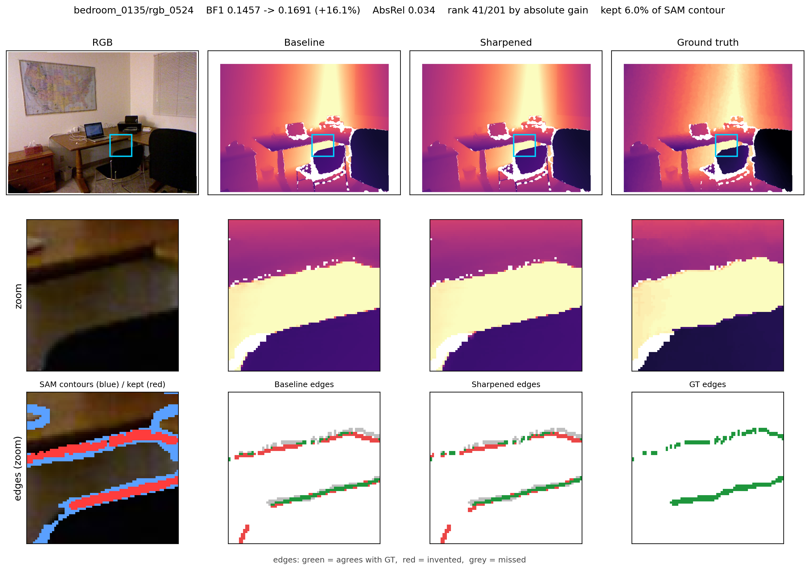

拡散モデルに基づく単眼深度推定は面の精度は高いが、深度の不連続（物体境界）がぼやける。 分割モデルが見つけた輪郭で予測深度を鋭化すれば直りそうだが、すべての輪郭に 鋭化を掛けると NYUv2 の境界 BF1 は 1.90% 悪化する。 本研究は測定によって、問題が輪郭の位置ではないことを示す。真の深度段差から最寄りの 輪郭までは中央値 1.00 画素である。壊れているのはどの輪郭を使うかで、 輪郭画素の 79.8% は段差のない場所にある。正解の 4% だけを正解データで選び、 輪郭を 1 画素も動かさずに鋭化すると、効果は −1.90% から +43.39% へ符号が反転する。 そこで本研究は修正操作を固定し、それをどこに掛けるかだけを学習する。 795 枚・16 分で学習した 193 万パラメータの選別器は、NYUv2 の BF1 を seed 4 本で 11.92 ± 0.90% 向上させる。さらに再学習なしで、 アーキテクチャも出力表現も異なる第二の深度モデルに適用でき、そちらでは 27.83 ± 1.27% 向上する。学習を伴わない対照 5 種を各モデル自身の予測で測定し、 学習の寄与を 10.7 ポイントと 17.4 ポイントと特定した。選別器と鋭化の追加コストは 1 枚あたり 30 ミリ秒で、分割の点グリッドを粗くすれば分割コストの 20% で利得の 95% が得られる。併せて負の結果も報告する。本手法は深度モデルをまたいでは転移するが、 データセットをまたいでは転移せず、4 通りの対処がいずれも失敗した。
事前学習済みの拡散モデルを転用した単眼深度推定 [1,2,3] は画素単位の精度では強いが、 生成モデルの持つ滑らかさを物体境界で引き継いでしまう。AbsRel が優秀でありながら、 画像中のすべての遮蔽境界が数画素にわたってにじんでいる、ということが起こりうる。 画素平均の指標はこれを検出しない。境界画素は画像のごく一部で、平らな面に支配された指標は 問題なしと報告するからである。境界専用の指標なら検出できる [4]。
深度モデルに手を入れずに済むため、境界を後処理で直す方針は魅力的である。 先行研究は深度をどう動かすかを学習してきた [5,6,7]。 本研究は逆の分解を取る。修正操作を固定し、それをどこに掛けるかだけを学習する。
この選択は経験的なものである。第 3 節では、分割モデル [8] が描いた輪郭すべてに 鋭化を掛けると境界 BF1 が 1.90% 下がることを測定する。 同じ測定が理由も示す。輪郭の位置はすでに十分であり、一方で輪郭の 79.8% は深度段差を まったく示していない。そこを鋭化しても滑らかな面を壊すだけである。 位置を一切変えずに、正解データで正しい輪郭だけを選ぶと、効果は −1.90% から +43.39% へ動く。 律速は位置精度ではなく選別である。
本研究の貢献は次の 4 点である。
第 7 節では、本手法がデータセットをまたいでは転移しないこと、およびその修復を 4 通り試みて失敗したことを報告する。

Marigold [1] は Stable Diffusion を合成 RGB-D で微調整し、アフィン不変な単眼深度推定へ 転用した。Lotus [2] は拡散のスケジュールを取り除き、タイムステップを固定して 1 ステップで 予測する。その後、1 ステップ化が手法を単純化すると同時に桁違いに高速化することが 示された [9]。本研究は、この系統の中で可能な限り離れた 2 つのモデルで評価する。 一つは 213 億パラメータの拡散トランスフォーマでアフィン不変な log 深度を出力し、 もう一つは 8.68 億パラメータの UNet で視差を出力する。
Ramamonjisoa らの研究 [5] が最も近い。遮蔽境界の周囲の画素を再標本化する 2 次元変位場を 学習するもので、任意の深度推定器の出力に適用でき、NYUv2 の学習 795 枚・評価 654 枚という 使い方まで本研究と同一である。SharpNet [6] は遮蔽輪郭の回復を深度ネットワーク自身の 学習に組み込む。Edge-guided 後処理 [7] は自己教師ありの視差合成において境界を保存する。 より最近では、NeRF による深度精緻化 [10] が edge F1 の相対 2.9% 改善を報告している。 これらはいずれも深度をどう動かすかを学習する。 著者らの知る限り、修正操作を固定して対象だけを学習する研究はなく、 また促進可能な分割モデルを境界候補の供給源として用いる研究もない。
Depth Pro [4] のスケール不変な境界 BF1 を採用する。隣接画素間の深度の比が 閾値を超えたときに深度段差があると判定し、その閾値を掃引する指標である。 本研究は新しい指標を提案しない。Lotus も本研究が用いる拡散トランスフォーマモデルも NYUv2 の BF1 を報告していないため、ベースラインは著者らが測定した。
Segment Anything [8] は、深度を事前情報としてマスクを精緻化する方向で利用されてきた。 本研究はこれを逆方向に用いる。学習した選別器が選り分ける深度境界の候補の 供給源としてである。
d を予測深度、C を輪郭画素の集合とする。障壁鋭化は、C の周囲 ±2 画素の帯を捨て、帯の外側から領域ラベルを内側へ伝播させて輪郭の両側が帯の内部で接する ようにし（一方が他方へ漏れ込まないように）、捨てた各画素を半径 3 画素以内の自分の側の 局所平均で埋め直す。帯を捨てるのは、拡散モデルが境界をまたいで値を内挿するためである。 片側だけから埋め直すことで、この混ざりを除去する。 この操作は設定値を 2 つ持つだけで、学習するものは何もない。 充填半径は帯より大きくなければならない。さもなければ埋める元が残らず、 何も起きない無操作になる。
表 1 は、213 億パラメータの拡散トランスフォーマ深度モデルを土台に、 Segment Anything が描く輪郭すべてにこの操作を掛けた結果である。境界 BF1 は 1.90% 低下する。
| 鋭化した輪郭 | 残存率 | 生の BF1 |
|---|---|---|
| 分割モデルの全輪郭 | 100% | −1.90% |
| オラクル：正しいものだけ | 4% | +43.39% |
真の深度不連続それぞれから最寄りの輪郭までの距離を測ると、中央値 1.00 画素、 76.9% が 2 画素以内である。輪郭は境界のある場所にある。 壊れているのは逆方向で、輪郭画素の 79.8% は深度段差のない場所にある ——壁紙の柄、床の目地、ポスターの縁である。そこを鋭化することは、 滑らかな面の帯を捨てて、値の一致する両側から埋め直すことであり、雑音を加える以外の効果がない。
真の不連続から 1 画素以内にある輪郭画素（全体の 4%）だけを残し、 残した輪郭はすべて元の位置に置いたまま鋭化すると、生の効果は −1.90% から +43.39% へ動く（表 1）。 輪郭は一つも動いていない。変わったのは集合だけである。 これは選別が律速要因であることを分離して示すと同時に、学習する選別器の目標を定める。
図 2 にパイプラインを示す。深度推定モデルと分割モデルは凍結する。 修正は第 3 節の固定操作である。学習する構成要素は選別器だけである。
入力と出力。選別器は 4 段の U-Net で、パラメータ数は 1,928,993 である。 RGB 画像（3 チャネル）、予測深度（1）、輪郭マスク（1）を入力し、画素ごとに 1 つのロジットを出す。 予測深度は画像ごとに標準化する。これらのモデルはアフィン不変であり、 絶対的な水準と尺度には情報がないため、学習時と推論時でここが食い違っても何も壊れず、 最終的な指標だけが悪化する。log 深度ではなく視差を出すモデルに対しては、 先に −log d を適用する。視差は深度が小さいほど大きくなるため、 そのまま与えると符号の反転した信号を渡すことになるからである。
残存率。確率の閾値ではなく、画像ごとに上位 6% の輪郭画素を残す。 閾値を固定すると、場面に含まれる輪郭の量によって残す量が変わり、 鋭化が使う予算がフレームごとに動いてしまう。
損失と学習。輪郭画素だけにマスクした二値交差エントロピーを用いる。 輪郭を含まない画像の 88% は、選別器に問うていない問題である。 輪郭画素は、正解深度の不連続から 1 画素以内にあれば正例とする。 正解データはこのラベル生成にのみ用い、推論経路には一切現れない。 学習は NYUv2 の学習用 795 枚をシーン単位で分割して行い、 RTX 4090 1 枚で 16 分・VRAM 3.5 GB を要する。評価用の 654 枚には一度も触れない。
NYUv2 [11] の評価用 654 枚で評価する。学習フレームとはシーンが重複しない。 指標は Depth Pro [4] のスケール不変な境界 BF1 で、 5% から 25% までの 11 点の閾値で掃引する。 各土台モデル自身の未鋭化の予測に対する BF1 の相対変化を「生の増分」として報告する。 予測は採点前にそれぞれの空間——一方は log 深度、他方は視差——で正解に整合させる。 この整合はすべての変種に等しく作用する。
表 2 は、アーキテクチャもパラメータ規模も出力表現も共有しない 2 つの深度モデルでの結果である。 学習した選別器は 1 つだけで、第一のモデルの予測で学習した。 第二のモデルには再学習なしで適用し、視差から log 深度への変換だけを加えている。
| 土台の深度モデル | BF1 | 選別なし | ＋選別器 |
|---|---|---|---|
| DiT・213 億・log 深度 | 0.0884 | −1.90% | +11.92 ± 0.90% |
| UNet・8.68 億・視差 | 0.0693 | +10.31% | +27.83 ± 1.27% |
第一のモデルでは seed 4 本すべてが +10% を超え、95% 信頼区間の下限は +10.49% である。 画素単位の精度は劣化しない。AbsRel は 0.03881 から 0.03860 へ、 δ1 は 0.97969 から 0.98000 へ動く。 いずれも変化は小さく、境界のために精度を犠牲にしていないということのみを主張する。
フレーム単位で採点すると、平均が少数のフレームに支えられているのではないことが分かる。 採点できた 651 枚のうち 493 枚（75.7%）で改善し、 相対利得の中央値は +14.13%、四分位は +0.32% と +34.38% である。 図 1 はこの分布の中ほどにあるフレームである。
利得は学習ではなく鋭化そのものから来ているのかもしれず、あるいは単に疎であることから 来ているのかもしれない。表 3 は、学習を伴わない 5 つの代替手段を、 各土台モデル自身の予測で測定したものである。
| 選別の方法 | DiT 213 億 | UNet 8.68 億 |
|---|---|---|
| なし（全輪郭） | −1.90% | +10.31% |
| 移設（同じ疎さ・違う場所） | −0.50% | −0.57% |
| 画素ランダム（同率） | −20.35% | −19.70% |
| ブロックランダム（同率） | −1.48% | −0.67% |
| 手作り特徴の閾値（最良） | +1.25% | +10.46% |
| 学習した選別器 | +11.92% | +27.83% |
| 学習の寄与 | 10.7 pt | 17.4 pt |
手作り特徴の対照は、予測深度の log 勾配の局所的な記述子に閾値を掛けるものである。 その特徴量は、順位付けの良さではなく最終指標で選んだ。 候補 4 つを測ると AUC の順位と BF1 の順位は逆転し、 AUC が最も低い特徴量（0.801）が BF1 最良（+1.25%）を、 AUC が最も高い特徴量（0.876）が BF1 最下位（−2.59%）を与える。 代理指標で選んだ対照は弱すぎることになり、弱い対照は比較される手法を良く見せるだけである。
画素ランダムの選別が両モデルでほぼ同じ値（−20.35% と −19.70%）を示すのは当然である。 この対照が測っているのは鋭化操作の性質であって、深度モデルの性質ではない。
分割モデルを完全に外し、選別器が RGB と深度から自力で境界を見つけ、 有効画素すべてを候補とする設定では、+11.92% ではなく +7.30% となる。 分割の寄与は 5.19 ポイント、全体の 42% である。 その機構は適合率ではなく再現率にある。 分割輪郭上で数えると真の段差は 1 枚あたり 1,221 画素で、予算 1,207 画素はその 98.9% を覆える。 画像全体で数えると 3,042 画素あり、同じ予算では再現率の上限が 39.7% になる。 分割モデルは正解の集合を絞ることによって寄与している。
表 4 は RTX 4090 1 枚での 1 フレームあたりの実時間である。 ウォームアップ後に実フレームで測定した。
| 構成 | ミリ秒/枚 | 生の BF1 | 1 pt あたり |
|---|---|---|---|
| 深度推定モデルのみ | 495 | — | — |
| ＋選別器（分割なし） | 525 | +7.30% | 72 |
| ＋選別器・grid 16 | 1,059 | +11.32% | 94 |
| ＋選別器・grid 48 | 3,128 | +11.92% | 262 |
選別器は 12.0 ミリ秒、鋭化は 18.3 ミリ秒であり、本研究が追加するのは 30.3 ミリ秒 ——深度推定モデル自身の 495 ミリ秒の 6% である。 それ以外をすべて支配するのは分割モデルで、点グリッドに応じて 534 ミリ秒から 2,603 ミリ秒を要する。
粗いグリッドで足りる。grid 16 は grid 48 の利得の 95% を、コストの 20% で達成し、 パイプライン全体を 3.0 倍速く、BF1 1 ポイントあたり 2.8 倍安くする。 適合率はグリッドをまたいで逆順に並ぶ（grid 16・32・48 で 51.6%・50.6%・50.2%）。 これは粗いグリッドが何をしているかを物語る。大きな物体の輪郭を辿り、 壁紙の柄や床の目地を取りこぼすため、選別器に渡される候補集合が最初から綺麗なのである。 grid 48 は grid 16 より 1 枚あたり 3,200 画素多く輪郭を見つけるが BF1 はほとんど動かず、 その大半が偽陽性であることを意味する。 これは前節のアブレーションと同じ機構——分割は正解の集合を絞ることで寄与する——が 別の軸で現れたものである。
本手法は深度モデルをまたいでは転移するが、データセットをまたいでは転移しない。 表 5 は、NYUv2 で学習した選別器を ScanNet [12] と Hypersim [13] に適用した結果である （深度モデルは同一）。
| 評価データ | 選別なし | ＋選別器 | 適合率 |
|---|---|---|---|
| NYUv2（在ドメイン） | −1.90% | +11.92% | 50.2% |
| ScanNet | +3.26% | +2.81% | 17.4% |
| Hypersim | +2.28% | −4.64% | 55.8% |
いずれの未見データセットでも、選別器は全輪郭を使う場合に及ばない。 4 通りの対処を試し、4 通りとも失敗した。 RGB チャネルを落とす（転移はむしろ悪化した）、別データセットで学習する、 残存率を 2% から 20% まで掃引する（ScanNet ではどの設定も選別なしに届かない）、 両者を等量混合して学習する（在ドメインの結果を損ない、転移も改善しない）。 学習データを 795 枚から 1,590 枚へ増やすと在ドメインの結果が悪化したため、 データ量も律速ではない。
これを報告するのは、この分野の先行研究が行う主張に関わるからである。 モデル非依存な後処理が、それゆえにデータセット非依存であるとは限らない。 2 種類の汎化は明らかに分離する。
上限までの余地。第 3 節のオラクルは +43.39% に達するのに対し、 本手法は +11.92% であり、選別が与えうるものの 71% が未回収である。 差は適合率にある（50.2% 対オラクルの 100%）。
指標の範囲。改善しているのは境界指標である。 AbsRel と δ1 の変化は改善と主張するには小さすぎ、劣化していないことのみを主張する。
ラベルと指標が定義を共有している。教師は「正解の深度段差から 1 画素以内」であり、 BF1 も正解の深度段差との一致を測る。正解データは推論に一切現れず、 評価シーンは学習と重複しないが、この対応関係は念頭に置いて読まれるべきである。
単眼深度に対する後処理の境界鋭化が失敗するのは、輪郭の位置が悪いからではなく、 その大半が深度段差を示していないからである。 修正操作を固定して対象だけを学習することで、利得の帰属が明確になり、 1 枚あたり 30 ミリ秒・193 万パラメータで、再学習なしに深度モデルをまたいで転移する。 データセットをまたいでは転移せず、著者らはそれを修復できなかった。